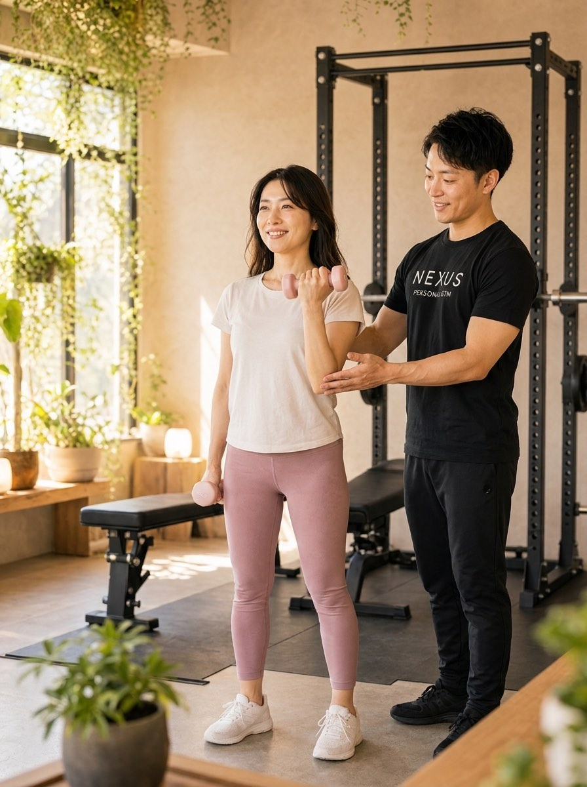
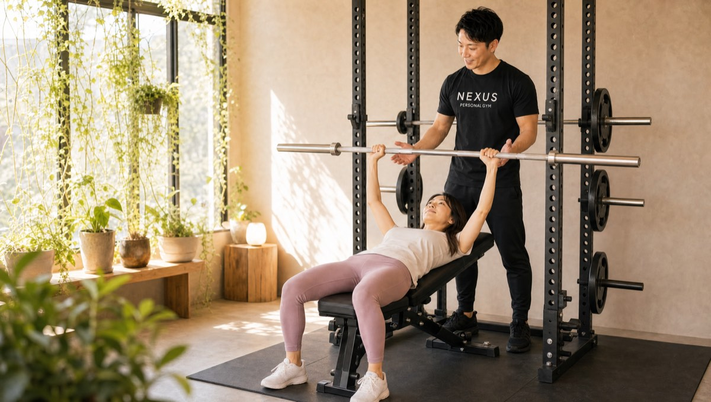
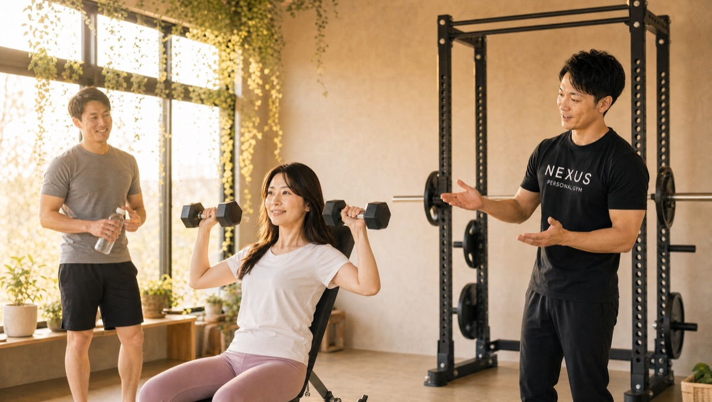

NEXUS Personal Gym ／ 東京都大田区
NEXUSパーソナルジム 石川台店｜石川台の完全個室・隠れ家ジム
東急池上線・石川台駅すぐ。大田区東雪谷の完全個室パーソナルジムです。「40代からの身体づくり」を軸に、回復力や関節に配慮した年代に合うメニューと、経験者も唸るフォーム指導が支持され、Google口コミ★5.0（90件）をいただいています。
- 完全個室
- 40代からの身体づくり
- 石川台駅すぐ
- 手ぶら通いOK
- AI食事指導

この店舗の特徴
NEXUS石川台店は、東急池上線・石川台駅からすぐの完全個室パーソナルジム。大田区東雪谷の落ち着いた住宅街にあり、「40代に入って体型や体力の変化を感じ始めた」という方に選ばれています。若い頃と同じやり方では無理が出やすい年代だからこそ、回復力や関節への負担に配慮した設計が必要です。ウェア・タオル・プロテインまで無料提供の手ぶら通いOKで、仕事帰りや外出のついでにバッグひとつで立ち寄れます。料金は1回4,500円〜（ライトコース30分・月4回18,000円）から始められます。
40代の身体は、40代のやり方で

石川台店が得意とするのは、40代からの身体づくりです。口コミでも「40歳を過ぎて体型と体力の変化が気になり入会。体調と生活に合わせたメニューで前向きになれた」という声をいただいています。20代と同じ追い込み方は、40代の身体には無理が出やすいもの。回復にかかる時間や関節への負担を踏まえ、その日のコンディションに合わせて負荷とペースを調整します。だから体を痛めることなく、無理のないペースで続けられる。「疲れにくくなった」「気持ちまで前向きになった」という変化を、身体の内側から実感していただけます。
40歳を過ぎて体型や体力の変化を感じて入会しました。無理のないペースで続けられ、気持ちまで前向きになっています。
経験者の伸び悩みにも

石川台店は、これまでトレーニング経験がある方の「伸び悩み」にも応えます。口コミには「経験者でも気づかない改善点を的確に指摘され、大きく伸びた」という声があります。自己流のフォームは、狙った部位に効ききっていないことが少なくありません。長年同じメニューで停滞している方こそ、第三者の目で細部を修正することが突破口になります。もちろん筋トレ未経験の方にも「どこに効いているか」を言葉で丁寧に伝えるので、初めての方も安心して始められます。
筋トレ未経験でも「どこに効いているか」を言葉で伝えてくれる丁寧な指導で、安心して始められました。
隣駅の雪が谷大塚店と使い分けOK
石川台店は、東急池上線で一駅隣の雪が谷大塚店ともつながっています。その日の予約状況や、仕事・お出かけの生活動線に合わせて2店を使い分けられるのは、路線沿いに複数店舗を構えるNEXUSならではの利便性。「今日は帰り道で寄りやすい方へ」といった通い方も可能です。石川台店が満席のときも、隣駅で希望の時間が取れることがあります。雪が谷大塚駅の完全個室パーソナルジム
トレーニング後まで含めて習慣に

身体を変えるのは、ジムでの60分だけではありません。石川台店ではトレーニング後のプロテインを無料で提供し、ウェア・タオルまで揃う手ぶら通いOKで、運動を「続く習慣」に落とし込むお手伝いをします。石川台エリアには呑川緑道や洗足池といった歩きやすい環境が身近にあり、トレーニングのない日は緑道や池のまわりを軽く歩く——そんな日常の運動と組み合わせれば、40代からの体力づくりはさらに前に進みます。無理なく続けられる健康習慣を、生活ごと設計していきましょう。
ご夫婦での利用も

石川台店では、ご夫婦での利用も歓迎しています。60分・月2回11,000円（税込／1回5,500円）のセミパーソナルなら、2人で受けながら費用も抑えられます。40〜50代のご夫婦が一緒に健康づくりを始めるケースは多く、お互いが「今日は行こう」と声をかけ合えることが、何よりの継続の力になります。同じ目標に向かって取り組む時間は、健康だけでなく日々の会話も豊かにしてくれます。まずはお二人で無料体験にお越しください。
まずは無料体験から
「40代からでも変われるのか」「経験者の停滞を見てもらえるのか」——不安があれば、まずは無料体験でお話を聞かせてください。カウンセリングで体力や運動歴、生活リズムをうかがったうえで、実際のトレーニングまで体験できます。当日入会で入会金が通常55,000円→15,000円（税込）に割引。無理な勧誘は一切ありません。東急池上線・石川台駅すぐなので、まずは話だけでも気軽に来てください。
料金プラン
入会金は通常55,000円、無料体験当日入会で15,000円（税込）に割引。AI食事指導は月額3,000円（税込）。全店舗共通の料金です。
アクセス
- 店舗名
- NEXUSパーソナルジム 石川台店
- 住所
- 〒145-0065
東京都大田区東雪谷2-23-5 ラフィーネ東雪谷201号 - 最寄り駅
- 東急池上線 石川台駅
- 営業時間
- 毎日 8:00〜23:00
- 電話番号
- 050-1790-8487
Google口コミ★5.0（90件）
NEXUS石川台店はGoogle口コミ90件で★5.0を維持。40代からの身体づくりと、経験者も唸るフォーム指導が評価されています。
※お客様の声はGoogle口コミの内容を要約して掲載しています。出典：Google マップ
経験者の自分にも刺さる細かなフォーム修正をしてもらえて、自己流よりはるかに効率的に伸ばすことができました。
石川台店のよくある質問
Q石川台で40代から通えるパーソナルジムはありますか？+
Qトレーニング経験がありますが停滞しています。見てもらえますか？+
Q雪が谷大塚店との違いは何ですか？+
よくある質問（全店共通）
料金・制度などNEXUS全店に共通するご質問です。さらに詳しくは110問のFAQをご覧ください。
Q料金はいくらですか？+
Q手ぶらで通えますか？+
Qキャンセルはいつまでできますか？+
Q食事指導はありますか？+
Qトレーナーはどんな人ですか？+
NEXUSパーソナルジム公式サイトを見る